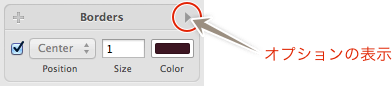
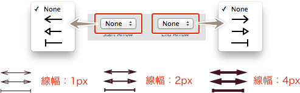
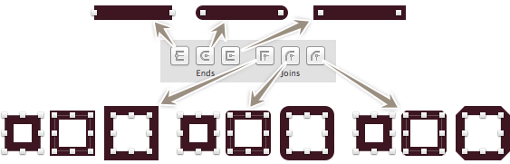
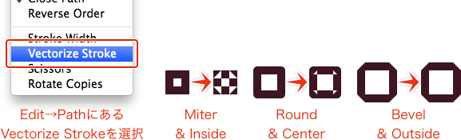
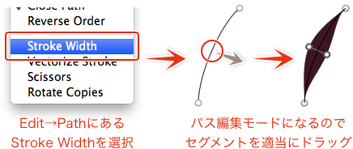
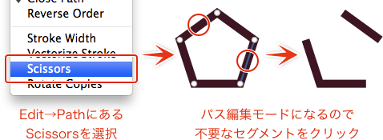

Sketch.app Advent Calender 2013 17日目の記事です。
Sketch.appのパスの描画について、破線の設定やアウトライン化・分割方法などについてお届けします。
Sketchの基本。というSketch（Sketch 3）の基本操作にフォーカスした電子書籍をリリースしました。詳しくはこちらの「Sketchの基本。」のページをご覧ください。
この記事はSketch 2を元にした記事です。最新版の動作とは異なる可能性が高いため、参考程度にご覧ください。
## 矢印にする インスペクタの「Borders」に設定があります。項目が表示されていない場合は、右側の三角マークをクリックしてツールを展開します。
「Start Arrow」と「End Arrow」のプルダウンから形状を選択します。

これに関しては、線を太くするとつぶれる、後述する破線を適用すると矢印の一部が欠けるなど、とりあえず矢印にできると覚えておくだけでいい機能だと思います…
終端とコーナーの処理を設定する
インスペクタの「Borders」に設定があります。「Ends」がオープンパスの終端、「Joins」がコーナーポイントの処理になります。「Joins」は線の描画位置によって結果が異なります。

破線にする
インスペクタの「Borders」にs（ry。
「Dash」が線分、「Gap」が破線の間隔です。
線をアウトライン化する
［Edit］→［Paths］にある、「Vectorize Stroke」を適用すると、パスをアウトライン化できます。ただし、線の位置が「Center」または「Inside」で太い線をアウトライン化すると、描画の関係でうまくアウトラインかできない場合があります。

線にストローク幅を付ける
［Edit］→［Paths］にある「Stroke Width」を適用し、セグメント上でドラッグすると、筆で書いたような強弱を付けることができます。パス上に角があると、うまくストロークが適用できないので、注意してください。確定後に再度編集するには、同じ様にメニューを選択します。

パスのセグメントを削除する
［Edit］→［Paths］にある「Scissors」を適用すると、セグメントを削除できるようになります。不要なセグメントを削除して、パスを分割してください。アンカーポイントで分割できないので、シェイプはコピーしてから作業する方がいいと思います。

ちなみにセグメントを削除し、2つ以上のオープンパスにした場合は、パスの結合状態になっているので、［Edit］→［Paths］の「Split」で個別のパスにすることができます。